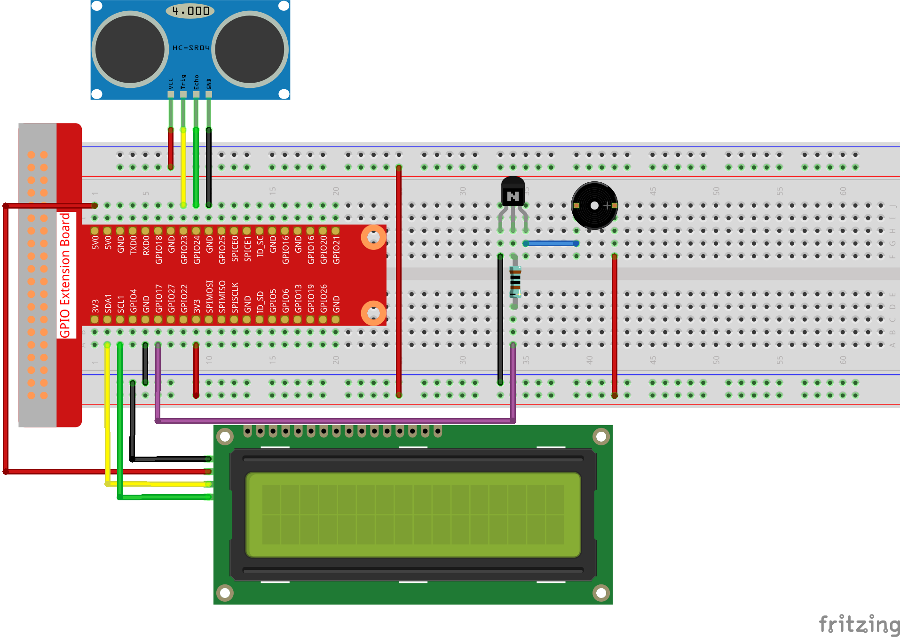

Nota
Ciao, benvenuto nella Community su Facebook per gli appassionati di SunFounder Raspberry Pi, Arduino e ESP32! Approfondisci le tue conoscenze su Raspberry Pi, Arduino ed ESP32 insieme ad altri appassionati.
Perché unirti a noi?
Supporto esperto: Risolvi i problemi post-vendita e le sfide tecniche con l’aiuto della nostra community e del nostro team.
Impara e Condividi: Scambia consigli e tutorial per migliorare le tue competenze.
Anteprime Esclusive: Ottieni accesso anticipato agli annunci dei nuovi prodotti e anteprime esclusive.
Sconti Speciali: Approfitta di sconti esclusivi sui nostri prodotti più recenti.
Promozioni e Giveaway Festivi: Partecipa a concorsi e promozioni in occasione delle festività.
üëâ Pronto a esplorare e creare con noi? Clicca su [Qui] e unisciti oggi stesso!
3.1.3 Allarme di Retromarcia
Introduzione
In questo progetto, utilizzeremo un display LCD, un cicalino e sensori a ultrasuoni per creare un sistema di assistenza alla retromarcia. Possiamo montarlo su un veicolo radiocomandato per simulare il processo di parcheggio in retromarcia.
Componenti

Schema di Collegamento
Il sensore a ultrasuoni rileva la distanza tra sé e l’ostacolo, mostrando i dati sul display LCD in forma codificata. Inoltre, emette un segnale acustico con frequenza variabile in base alla distanza rilevata.
T-Board Name |
physical |
wiringPi |
BCM |
GPIO23 |
Pin 16 |
4 |
23 |
GPIO24 |
Pin 18 |
5 |
24 |
GPIO17 |
Pin 11 |
0 |
17 |
SDA1 |
Pin 3 |
||
SCL1 |
Pin 5 |

Procedure Sperimentali
Passo 1: Costruisci il circuito.
{kind=link}
Passo 2: Cambia directory.
cd ~/davinci-kit-for-raspberry-pi/c/3.1.3/
Passo 3: Compila.
gcc 3.1.3_ReversingAlarm.c -lwiringPi
Passo 4: Esegui.
sudo ./a.out
Quando il codice è in esecuzione, il modulo a ultrasuoni rileva la distanza dall’ostacolo e visualizza le informazioni sulla distanza su LCD1602; inoltre, il cicalino emette un tono di avvertimento la cui frequenza varia in base alla distanza.
Nota
Se appare il messaggio di errore
wiringPi.h: No such file or directory, fai riferimento a Installazione e Verifica di WiringPi.Se ottieni l’errore
Unable to open I2C device: No such file or directory, consulta Configurazione I2C per abilitare I2C e controlla il corretto cablaggio.Se codice e cablaggio sono corretti ma l’LCD non visualizza nulla, prova a regolare il potenziometro sul retro per aumentare il contrasto.
Codice
Nota
I codici seguenti sono incompleti. Per visualizzare il codice completo,
ti suggeriamo di utilizzare il comando nano 3.1.1_ReversingAlarm.c.
#include <wiringPi.h>
#include <stdio.h>
#include <sys/time.h>
#include <wiringPi.h>
#include <wiringPiI2C.h>
#include <string.h>
#define Trig 4
#define Echo 5
#define Buzzer 0
int LCDAddr = 0x27;
int BLEN = 1;
int fd;
// Funzione per il controllo dell’LCD
void write_word(int data){...}
void send_command(int comm){...}
void send_data(int data){...}
void lcdInit(){...}
void clear(){...}
void write(int x, int y, char data[]){...}
// Funzione per il controllo dell'Ultrasuoni
void ultraInit(void){...}
float disMeasure(void){...}
// Funzione principale
int main(void)
{
float dis;
char result[10];
if(wiringPiSetup() == -1){
printf("setup wiringPi failed !");
return 1;
}
pinMode(Buzzer,OUTPUT);
fd = wiringPiI2CSetup(LCDAddr);
lcdInit();
ultraInit();
clear();
write(0, 0, "Ultrasonic Starting");
write(1, 1, "By Sunfounder");
while(1){
dis = disMeasure();
printf("%.2f cm \n",dis);
delay(100);
digitalWrite(Buzzer,LOW);
if (dis > 400){
clear();
write(0, 0, "Error");
write(3, 1, "Out of range");
delay(500);
}
else
{
clear();
write(0, 0, "Distance is");
sprintf(result,"%.2f cm",dis);
write(5, 1, result);
if(dis>=50)
{delay(500);}
else if(dis<50 & dis>20) {
for(int i=0;i<2;i++){
digitalWrite(Buzzer,HIGH);
delay(50);
digitalWrite(Buzzer,LOW);
delay(200);
}
}
else if(dis<=20){
for(int i=0;i<5;i++){
digitalWrite(Buzzer,HIGH);
delay(50);
digitalWrite(Buzzer,LOW);
delay(50);
}
}
}
}
return 0;
}
Spiegazione del Codice
pinMode(Buzzer,OUTPUT);
fd = wiringPiI2CSetup(LCDAddr);
lcdInit();
ultraInit();
In questo programma, applichiamo i componenti precedentemente utilizzati in modo sintetico. Qui utilizziamo cicalini, LCD e sensori a ultrasuoni. Li inizializziamo nello stesso modo in cui abbiamo fatto in precedenza.
dis = disMeasure();
printf("%.2f cm \n",dis);
digitalWrite(Buzzer,LOW);
if (dis > 400){
write(0, 0, "Error");
write(3, 1, "Out of range");
}
else
{
write(0, 0, "Distance is");
sprintf(result,"%.2f cm",dis);
write(5, 1, result);
}
Qui otteniamo il valore dal sensore a ultrasuoni e calcoliamo la distanza.
Se il valore della distanza supera il limite massimo di rilevamento, un messaggio di errore viene visualizzato sull’LCD. Se invece il valore della distanza rientra nel limite, i risultati corrispondenti vengono mostrati.
sprintf(result,"%.2f cm",dis);
Poiché l’LCD supporta solo l’output di tipo carattere e la variabile dis contiene un valore di tipo float, dobbiamo usare sprintf(). Questa funzione converte il valore di tipo float in un carattere e lo memorizza nella stringa result[]. %.2f indica di mantenere due cifre decimali.
if(dis>=50)
{delay(500);}
else if(dis<50 & dis>20) {
for(int i=0;i<2;i++){
digitalWrite(Buzzer,HIGH);
delay(50);
digitalWrite(Buzzer,LOW);
delay(200);
}
}
else if(dis<=20){
for(int i=0;i<5;i++){
digitalWrite(Buzzer,HIGH);
delay(50);
digitalWrite(Buzzer,LOW);
delay(50);
}
}
Questa condizione di controllo regola il suono del cicalino. A seconda della distanza rilevata, vengono gestiti tre casi diversi, ciascuno con frequenze sonore differenti. Poiché il valore complessivo di delay è 500, ogni caso fornisce un intervallo di 500 ms per il sensore a ultrasuoni.